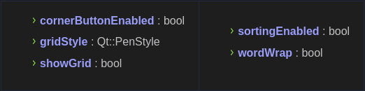
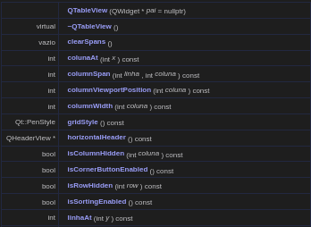
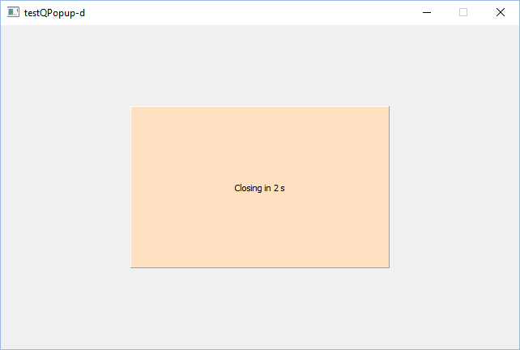

Janela de Diálogo - Pop-up
Pop up: O pop-up é um tipo de janela que se abre no navegador ao visitar uma página web ou acessar uma hiperligação específica. O pop-up é utilizado por autores de sites para abrir alguma informação extra ou como meio de propaganda.
Tipo de QML pop-up
Tipo básico de controles de interface de usuário semelhantes a pop-up.
Lista de todos os membros, incluindo membros herdados
Propriedades
Funções Públicas
Descrição detalhada
Um QTableView implementa uma visualização de tabela que exibe itens de um modelo. Esta classe é usada para fornecer tabelas padrão que foram fornecidas anteriormente pela classe QTable, mas usando a abordagem mais flexível fornecida pela arquitetura model/view do Qt.
A classe QTableView é uma das classes Model/View e faz parte do framework model/view do Qt .
QTableView implementa as interfaces definidas pela classe QAbstractItemView para permitir a exibição de dados fornecidos por modelos derivados da classe QAbstractItemModel.
Navegação
Você pode navegar pelas células da tabela clicando em uma célula com o mouse ou usando as teclas de seta. Como o QTableView habilita tabKeyNavigation por padrão, você também pode pressionar Tab e Backtab para mover de célula para célula.
Aparência Visual
A tabela tem um cabeçalho vertical que pode ser obtido usando a função verticalHeader() e um cabeçalho horizontal que está disponível através da função horizontalHeader(). A altura de cada linha na tabela pode ser encontrada usando rowHeight(); da mesma forma, a largura das colunas pode ser encontrada usando columnWidth(). Como ambos são widgets simples, você pode ocultar qualquer um deles usando suas funções hide(). Cada cabeçalho é configurado com suas propriedades highlightSections e sectionClickable definidas como true.
Linhas e colunas podem ser ocultadas e mostradas com hideRow(), hideColumn(), showRow() e showColumn(). Eles podem ser selecionados com selectRow() e selectColumn(). A tabela mostrará uma grade dependendo da propriedade showGrid.
Os itens mostrados em um modo de exibição de tabela, como os de outros modos de exibição de item, são renderizados e editados usando delegados padrão . No entanto, para algumas tarefas, às vezes é útil poder inserir widgets em uma tabela. Widgets são definidos para índices específicos com a função setIndexWidget() e posteriormente recuperados com indexWidget().
Pop-up Layout
O implicitWidth e o implicitHeight de um pop-up geralmente são baseados nos tamanhos implícitos do plano de fundo e do item de conteúdo, além de quaisquer inserções e preenchimentos. Essas propriedades determinam o tamanho do pop-up quando nenhuma largura ou altura explícita for especificada.
A geometria do contentItem é determinada pelo preenchimento. O exemplo a seguir reserva um preenchimento de 10px entre os limites do pop-up e seu conteúdo:
Popup {
topInset: -2
leftInset: -2
rightInset: -6
bottomInset: -6
background: BorderImage {
source: ":/images/shadowed-background.png"
}
Em primeiro lugar, gostaria de recomendar o exemplo de sinalizadores do Windows dos documentos do Qt. Ele fornece uma boa amostra para brincar com este tópico. Neste exemplo, um QWidget é derivado para mostrar o efeito dos sinalizadores distintos. Isso me levou à ideia de que provavelmente qualquer QWidget pode ser usado para isso se o Qt::WindowFlags apropriado estiver definido.
Eu escolhi QLabel porque
- Ele pode exibir texto
- Ele herda do QFrame e, portanto, pode ter um quadro.
Código da mainwindow.cpp:
mainwindow.cpp
#include <QApplication>
#include <QLabel>
#include <QMainWindow>
#include <QTimer>
using namespace std;
int main(int argc, char **argv)
{
cout << QT_VERSION_STR << endl;
// main application
#undef qApp // undef macro qApp out of the way
QApplication qApp(argc, argv);
// setup GUI
QMainWindow qWin;
qWin.setFixedSize(640, 400);
qWin.show();
// setup popup
QLabel qPopup(QString::fromLatin1("Some text"),
&qWin,
Qt::SplashScreen | Qt::WindowStaysOnTopHint);
QPalette qPalette = qPopup.palette();
qPalette.setBrush(QPalette::Background, QColor(0xff, 0xe0, 0xc0));
qPopup.setPalette(qPalette);
qPopup.setFrameStyle(QLabel::Raised | QLabel::Panel);
qPopup.setAlignment(Qt::AlignCenter);
qPopup.setFixedSize(320, 200);
qPopup.show();
// setup timer
QTimer::singleShot(1000,
[&qPopup]() {
qPopup.setText(QString::fromLatin1("Closing in 3 s"));
});
QTimer::singleShot(2000,
[&qPopup]() {
qPopup.setText(QString::fromLatin1("Closing in 2 s"));
});
QTimer::singleShot(3000,
[&qPopup]() {
qPopup.setText(QString::fromLatin1("Closing in 1 s"));
});
QTimer::singleShot(4000, &qPopup, &QLabel::hide);
// run application
return qApp.exec();
}
